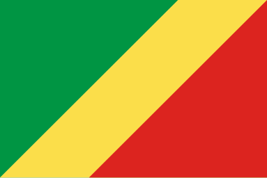

About Me
My name is Newton. I was born in Congo Brazaville and I live alone in Brazzaville. I am currently working as an enrollment counselor at Springboard. I love learning, espacially new languages and I love discovering new foods.
Brazzaville, Republic of the Congo
The Republic of the Congo, often referred to as Congo-Brazzaville (to distinguish it from the neighboring Democratic Republic of the Congo), is a country located in Central Africa. Its capital and largest city is Brazzaville. The country is bordered by Gabon to the west, Cameroon to the northwest, the Central African Republic to the north, the Democratic Republic of the Congo to the east and south, and the Atlantic Ocean to the west.
